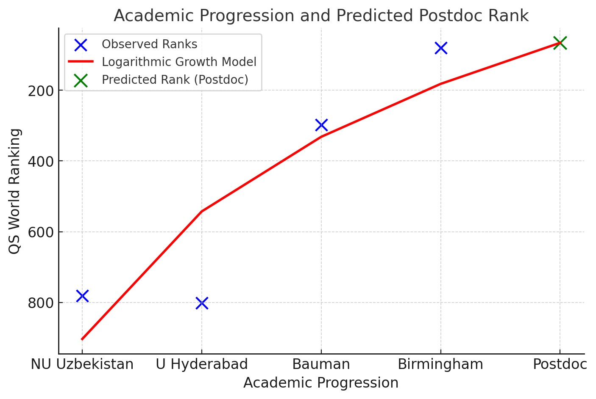

My name is Bakhyt Bakiyev, and I was born in Uzbekistan. After completing my secondary education, I received a state grant for my bachelor's degree. Driven by my passion for mathematics, I pursued a degree in applied mathematics at the Faculty of Mathematics, National University of Uzbekistan, where I successfully graduated with a bachelor's degree. However, as my interest in programming grew, I began exploring opportunities to further my studies in computer science.
Recognizing India's esteemed reputation in programming, I set my sights on earning a master's degree there. Although I faced setbacks in my first two attempts to secure a scholarship through the Indian Embassy, perseverance eventually paid off. I was awarded a full scholarship from the Indian government to study computer applications at the University of Hyderabad, enabling me to complete my master's degree in computer applications.
After several years of teaching computer science, my ambition to deepen my knowledge and engage in research intensified. I applied for the prestigious Kazakhstan presidential scholarship, "Bolashak," and was honored to be awarded a full scholarship for another master's degree. This time, I specialized in software engineering at Bauman State Technical University in Russia. This experience not only solidified my technical expertise but also fueled my passion for research.
To make meaningful contributions to computer science, I sought opportunities to pursue a Ph.D. abroad. In 2021, I was once again privileged to receive the "Bolashak" scholarship, which allowed me to enroll at the University of Birmingham, where I am currently pursuing a Ph.D. in Computer Science.
Reflecting on my academic journey, I can clearly observe a consistent progression toward increasingly prestigious institutions, and I am now able to predict my next step—toward a postdoc position. According to the QS World Rankings for 2025, the institutions I have attended are ranked as follows:
- National University of Uzbekistan (781)
- University of Hyderabad (801)
- Bauman State Technical University (298)
- University of Birmingham (80)
By analyzing the above rankings, I derived a logarithmic growth model that illustrates my academic progression. The general form of the logarithmic regression model is:
y = a + b * ln(x)
Where:
- y: Dependent variable (QS World Ranking).
- x: Independent variable (academic step: 1 = first institution, 2 = second, etc.).
- a, b: Parameters of the logarithmic function, determined by fitting the model to the data.
Using least squares regression, we determined:
- a = 903.12: Baseline ranking when ln(x) = 0.
- b = -519.96: Rate of improvement in rankings as x increases.
y = 903.12 − 519.96 * ln(x)
It is my sincere hope that, with the grace of God, I will complete my Ph.D. at the University of Birmingham first. I humbly recognize that all plans are subject to God's will, as the saying goes: "Man assumes, and God disposes."
Quotes
"Live for a century, learn for a century."
"Doğumdan ölüme kadar ilim öğrenin. Beşikten mezara kadar ilim öğrenin."
"Век живи — век учись."